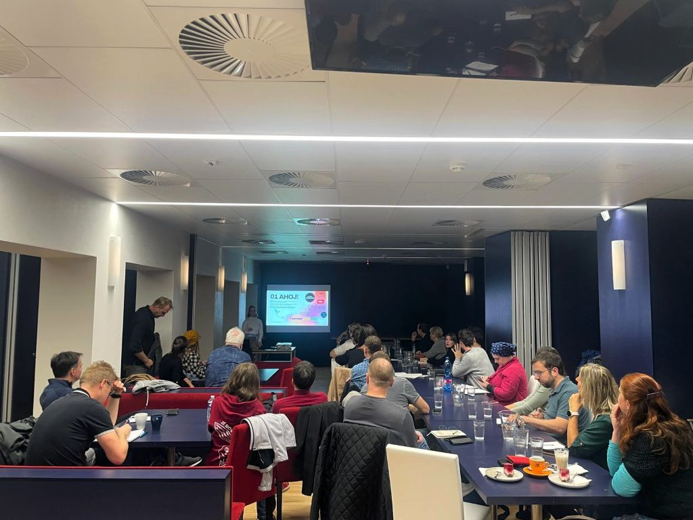
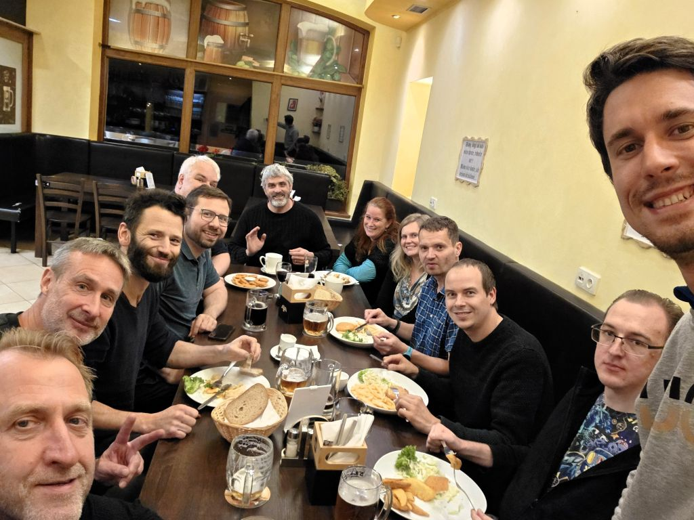

Marketing pro Gen Z a Inovace v Povlečení: Reportáž z Klubu Podnikavců v Kuřimi
Středeční večer 15. října 2025 patřil v Kuřimi networkingu a vzdělávání. Ve Společenském a kulturním centru se pod hlavičkou Klubu Podnikavců sešla komunita místních podnikatelů, aby načerpala nové znalosti a propojila své byznysové světy. Večer byl rozdělen na dvě části – odbornou přednášku a volné navazování kontaktů.

Jak zaujmout v online světě? Klíčem je autentický obsah
První část večera patřila Anežce Margholdové, specialistce na sociální média a obsahový marketing. Její přednáška se zaměřila na jedno z nejpalčivějších témat současnosti: jak v dnešní uspěchané době efektivně komunikovat se zákazníky, zejména s mladší generací Z.
Anežka poutavě vysvětlila, jak generace Z vnímá online prostor a proč je pro ně klíčová autenticita. Podělila se o praktické tipy, jak využít dostupné nástroje k budování dosahu a jak tvořit obsah, který zaujme pozornost v prvních vteřinách. Dotkla se také stále populárnější spolupráce s influencery a přiblížila obvyklé podmínky, za jakých taková partnerství fungují.
Od AI po revoluční povlečení
Po informačně nabité přednášce následovala druhá, neméně důležitá část večera – volný networking. Dvanáctka podnikatelů z regionu zaplnila prostor živými diskuzemi. Probírala se aktuální témata jako marketingové strategie, práce s mladými talenty, ale i nevyhnutelný fenomén umělé inteligence a její dopady na byznys.
Největší rozruch však vzbudil Adam Sedláček se svým inovativním projektem. Jeho prototyp ručně vyráběného povlečení, které se díky chytrému řešení neshrnuje z peřin, okamžitě zaujal a strhla se kolem něj vlna zájmu.
Tento moment skvěle ilustroval sílu podobných setkání – nejenže se zde sdílí know-how, ale rodí se zde i příležitosti pro zcela nové a neotřelé nápady, které mohou najít své první fanoušky a zákazníky.
Říjnové setkání v Kuřimi opět potvrdilo, že kombinace kvalitního obsahu a prostoru pro neformální diskuze je receptem na úspěšnou akci, která posouvá místní podnikatelskou komunitu vpřed. Těšíme se na další pokračování!
← Zpět na přehled článků